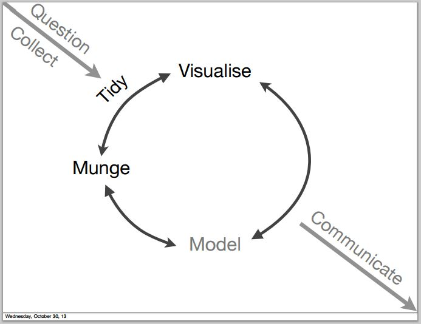
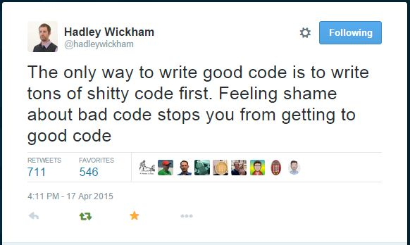
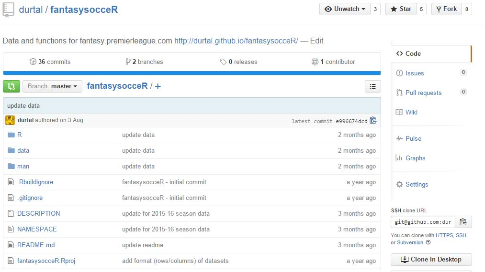
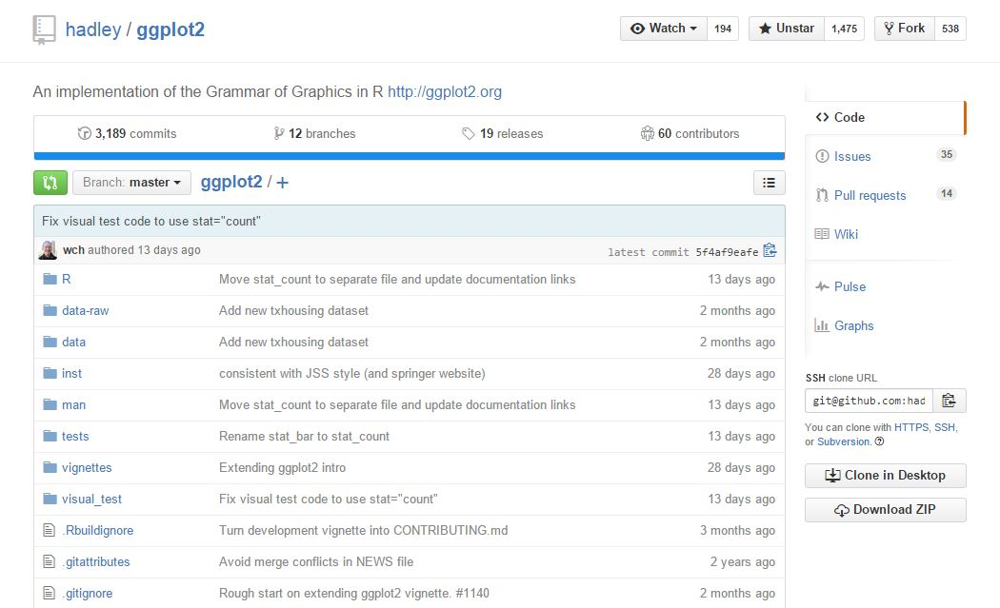
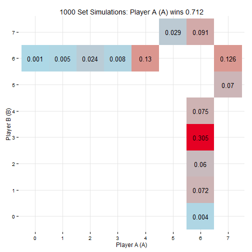
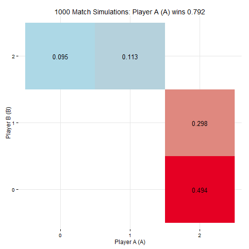
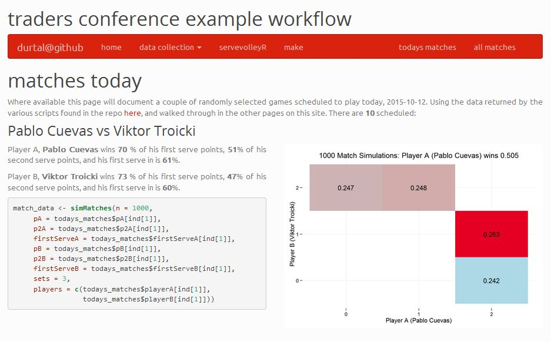

Introduction to R
Matchbook Traders Conference 2015
Tom Heslop
@UTVilla
subjects to cover
- background
- introduce R
- introduce Git (very briefly)
-
build your own R packages
- RcappeR - horse racing
- servevolleyR - tennis
- fantasysocceR, rBloodstock, calheatmapR, betfaiR (incomplete)
-
example workflow
- use R, Git, other open source tools to manage projects/analysis
- use community built packages to collect and clean data
- use my own servevolleyR package on the collected data
- present findings using more community built packages
background
january 2013
an Excel user

may 2013
what is R?

june 2013
type first R command

june 2014
I understand...

...no I don't
december 2014
release my second R package

always learning...
what is R?
R is a free software environment for statistical computing and graphics
R is...
...open source
...a programming language
...data analysis software
...a community
data analysis software
data analysis workflow

obtain/collect
- Excel
- csv, xls, xlsx
- Databases
- SQL Server, MySQL, postgresQL, SQLite
- MongoDB
- Neo4j
- SAS, SPSS, Stata
- Web
- API
- web scraping
tournaments <- read.csv("example/data/tournaments.csv", stringsAsFactors = FALSE)
head(tournaments, 2)
## name link venue
## 1 Brisbane /en/tournaments/brisbane/339/overview Brisbane, Australia
## 2 Doha /en/tournaments/doha/451/overview Doha, Qatar
## date surface
## 1 2015.01.04 - 2015.01.11 Outdoor Hard
## 2 2015.01.05 - 2015.01.10 Outdoor Hard
obtain/collect packages
scrub/clean/munge
str(tournaments)
## 'data.frame': 66 obs. of 5 variables:
## $ name : chr "Brisbane" "Doha" "Chennai" "Sydney" ...
## $ link : chr "/en/tournaments/brisbane/339/overview" "/en/tournaments/doha/451/overview" "/en/tournaments/chennai/891/overview" "/en/tournaments/sydney/338/overview" ...
## $ venue : chr "Brisbane, Australia" "Doha, Qatar" "Chennai, India" "Sydney, Australia" ...
## $ date : chr "2015.01.04 - 2015.01.11" "2015.01.05 - 2015.01.10" "2015.01.05 - 2015.01.11" "2015.01.11 - 2015.01.17" ...
## $ surface: chr "Outdoor Hard" "Outdoor Hard" "Outdoor Hard" "Outdoor Hard" ...
library(stringr)
tournaments$start_date <- str_extract(tournaments$date,
"^[[:digit:]]{4}\\.[[:digit:]]{2}\\.[[:digit:]]{2}")
tournaments$end_date <- str_extract(tournaments$date,
"[[:digit:]]{4}\\.[[:digit:]]{2}\\.[[:digit:]]{2}$")
## name date start_date end_date
## 1 Brisbane 2015.01.04 - 2015.01.11 2015.01.04 2015.01.11
## 2 Doha 2015.01.05 - 2015.01.10 2015.01.05 2015.01.10
scrub/clean packages
explore/visualise
summary(gulfstream)
## date race race_type dist
## Length:2863 Min. : 1.000 Length:2863 Min. :6.000
## Class :character 1st Qu.: 2.000 Class :character 1st Qu.:6.000
## Mode :character Median : 5.000 Mode :character Median :8.000
## Mean : 4.997 Mean :7.088
## 3rd Qu.: 7.000 3rd Qu.:8.000
## Max. :11.000 Max. :8.000
##
## surf value going trainer
## Length:2863 Min. :12500 Length:2863 Length:2863
## Class :character 1st Qu.:17500 Class :character Class :character
## Mode :character Median :21250 Mode :character Mode :character
## Mean :23300
## 3rd Qu.:27250
## Max. :46200
##
## jockey j_clm age wgt
## Length:2863 Min. : 0.000 Min. : 2.000 Min. :108
## Class :character 1st Qu.: 0.000 1st Qu.: 3.000 1st Qu.:118
## Mode :character Median : 0.000 Median : 4.000 Median :119
## Mean : 1.012 Mean : 3.851 Mean :119
## 3rd Qu.: 0.000 3rd Qu.: 5.000 3rd Qu.:121
## Max. :10.000 Max. :10.000 Max. :127
##
## gate pos horse fintime
## Min. : 1.00 Min. : 1.00 Length:2863 Min. : 69.93
## 1st Qu.: 3.00 1st Qu.: 3.00 Class :character 1st Qu.: 73.99
## Median : 5.00 Median : 5.00 Mode :character Median : 96.12
## Mean : 5.12 Mean : 5.12 Mean : 88.22
## 3rd Qu.: 7.00 3rd Qu.: 7.00 3rd Qu.:100.17
## Max. :14.00 Max. :14.00 Max. :122.35
## NA's :16
## sect_4f
## Min. :44.33
## 1st Qu.:46.77
## Median :47.52
## Mean :47.67
## 3rd Qu.:48.42
## Max. :55.29
## NA's :3
ggplot(data = gulfstream) +
geom_histogram(binwidth = 0.5, aes(x = fintime))
ggplot(data = gulfstream) +
geom_point(aes(x = sect_4f, y = fintime))
## Warning: Removed 16 rows containing missing values (geom_point).
model
interpret/communicate
- rmarkdown - build dynamic documents and make your workflow reproducible. Uses the knitr package
- shiny - interactive web applications
-
htmlwidgets - interactive visualisations that use existing Javascript libraries
- DiagrammeR - diagrams
- dygraphs - time series
- leaflet - maps
- ggvis - interactive
ggplot2
a community
- dedicated and passionate community who improve and extend R
- over 7000 R packages on CRAN
-
packages built by experts in their field, including
- statistics
- machine learning
- finance
- visualisation
- biology ...
- many more packages available on Github/Bioconductor
- check out the #rstats hashtag for the latest articles on R
learn R
-
Coursera courses run by Johns Hopkins
- R Programming
- Data Science Toolbox
- includes introduction to git/github
-
Statistical Learning by Stanford
- accompanied by free book Introduction to Statistical Learning
-
Stat545 by University of British Columbia
- course notes for Data Wrangling, Exploration and Analysis with R
- includes introduction to git/github

code
code code code code code
what is Git?
Git is a free and open source distributed version control system designed to handle everything from small to very large projects with speed and efficiency
Git allows you
...to organise and manage a collection of files
...to go back to older versions of the files
...branch out and add features with the flexibility to jump between project versions
cleaner and clearer
without git
multiple files, all very similar
analysis.Ranalysis-1.Rdata.csvdata-2.csvfinal-data.csvplot.pngplot1.pngfinal-plot.pngfinal-report.docxreport.docxtmp.R
with git
git keeps track of changes over time
analysis.Rdata.csvfinal-report.docx
fantasysocceR
master branch

fantasysocceR
gh-pages branch

Many popular R packages are developed in the open

RcappeR
to aid the analysis and handicapping of horse racing
help pages
install package
# devtools package needed to install package from github
# install.packages('devtools')
devtools::install_github('durtal/RcappeR')
library(RcappeR)
simple cleaning tasks
conv_times(times = c("1m39.99", "1:12.78", "1min23.34"))
## [1] 99.99 72.78 83.34
conv_len(lengths = c("0", "nse", "hd", "nk", "0.5", "1 3/4"))
## [1] 0.00 0.02 0.10 0.20 0.50 1.75
conv_margins(btn_l = c(0, 0.02, 0.1, 0.2, 0.5, 1.75),
cum_l = FALSE,
win_time = 99.99)
## [1] 99.99 99.99 100.01 100.05 100.15 100.50
basic handicapping
## pos wgt horse fintime
## 1 1 122 don'tgetmestarted 72.43
## 2 2 122 dream of scipio 74.18
## 3 3 122 beltram 74.54
## 4 4 122 gold bitten tiger 74.65
## 5 5 117 simon's a winner 74.68
races <- gulfstream %>%
group_by(date, race) %>%
mutate(btn_sec = btn_sec(fintime),
scale = lbs_per_sec(dist = dist, surf = "dirt"),
btn_lbs = scale * btn_sec,
diff_wgts = diff_at_wgts(btn_lbs = btn_lbs, wgt_carried = wgt))
## Source: local data frame [5 x 7]
##
## pos wgt horse fintime btn_sec btn_lbs diff_wgts
## (int) (int) (chr) (dbl) (dbl) (dbl) (dbl)
## 1 1 122 don'tgetmestarted 72.43 0.00 0.00 0.00
## 2 2 122 dream of scipio 74.18 1.75 29.75 29.75
## 3 3 122 beltram 74.54 2.11 35.87 35.87
## 4 4 122 gold bitten tiger 74.65 2.22 37.74 37.74
## 5 5 117 simon's a winner 74.68 2.25 38.25 43.25
more handicapping
family of functions uses zipf's law to handicap races
RcappeR @ Gulfstream Park

servevolleyR
simulate tennis points, games, tiebreaks, sets and matches
help pages
install package
# devtools package needed
# install.packages('devtools')
devtools::install_github('durtal/servevolleyR')
library(servevolleyR)
simPoint
simulates server winning a point on their serve
simPoint(p = .75)
## [1] 1
used by all other sim____ functions
points <- replicate(10000, simPoint(p = .75))
head(points, 20)
## [1] 0 0 1 1 1 0 0 0 1 1 1 1 1 0 0 1 0 0 0 1
table(points) / sum(table(points))
## points
## 0 1
## 0.2493 0.7507
simGame
simGame(p = .75, p2 = .56, firstServe = .68)
## [1] 1
simGames
games <- simGames(n = 1000, p = .75, p2 = .56, firstServe = .68)
games
##
## Simulation of 1000 service games:
## Server won 0.899 (899/1000) of games.
##
## Server probabilities:
## p p2 firstServe
## 0.75 0.56 0.68
simSet and simSets
sets <- simSets(n = 1000, pA = .75, p2A = .56, firstServeA = .68,
pB = .68, p2B = .53, firstServeB = .63, playTiebreak = TRUE)

simMatch and simMatches
matches <- simMatches(n = 1000, sets = 3,
pA = .75, p2A = .56, firstServeA = .68,
pB = .68, p2B = .53, firstServeB = .63, finalSetTiebreak = TRUE)

svRshiny
launch in R
svRshiny()
or visit
https://durtal.shinyapps.io/servevolleyR
example workflow
data analysis workflow
obtain/clean
tournaments
http://www.atpworldtour.com/en/tournaments
matches
http://www.atpworldtour.com/en/tournaments/shanghai/5014/overview
players
http://www.atpworldtour.com/en/players/andy-murray/mc10/player-stats
player data
http://www.atpworldtour.com/en/players/andy-murray/mc10/player-stats

load rvest for harvesting web data, read in andy murrays stats page using html function
library(rvest)
andy_murray_page <- html("http://www.atpworldtour.com/en/players/andy-murray/mc10/player-stats")
extract the first table from andy murrays stats page, his service stats
andy_murray_stats <- andy_murray_page %>%
html_table() %>%
.[[1]]
## Service Record NA
## 1 Aces 4,663
## 2 Double Faults 1,675
## 3 1st Serve 58%
## 4 1st Serve Points Won 74%
## 5 2nd Serve Points Won 52%
## 6 Break Points Faced 4,099
## 7 Break Points Saved 63%
## 8 Service Games Played 8,443
## 9 Service Games Won 82%
## 10 Service Points Won 65%
change names of dataframe so they are easier to work with
names(andy_murray_stats) <- c("stat", "value")
load dplyr package for manipulating data, and stringr for working with strings
library(dplyr)
library(stringr)
andy_murray_stats <- andy_murray_stats %>%
filter(grepl("1st Serve|2nd Serve", stat)) %>%
mutate(new_value = str_replace(value, "[[:punct:]]", ""),
new_value = as.numeric(new_value) / 100)
andy_murray_stats
## stat value new_value
## 1 1st Serve 58% 0.58
## 2 1st Serve Points Won 74% 0.74
## 3 2nd Serve Points Won 52% 0.52
write a function
(murray <- get_player_stats(player = "andy murray"))
## stat value new_value
## 1 1st Serve 58% 0.58
## 2 1st Serve Points Won 74% 0.74
## 3 2nd Serve Points Won 52% 0.52
(federer <- get_player_stats(player = "roger federer"))
## stat value new_value
## 1 1st Serve 62% 0.62
## 2 1st Serve Points Won 77% 0.77
## 3 2nd Serve Points Won 57% 0.57
write R scripts
collect tournament data
collect match data
collect player data and predict matches
Make is used to build a pipeline
example Makefile
# collect data
collect-tournaments:
Rscript R/collect-tournament-data.R
collect-matches:
Rscript R/collect-matches.R
predict-matches:
Rscript R/predict-matches.R
tennis: collect-tournaments collect-matches predict-matches
# build website
HTML_FILES := $(patsubst %.Rmd, %.html ,$(wildcard *.Rmd)) \
$(patsubst %.md, %.html ,$(wildcard *.md))
all: clean html
html: $(HTML_FILES)
%.html: %.Rmd
R --vanilla --slave -e "rmarkdown::render('$<')"
%.html: %.md
R --vanilla --slave -e "rmarkdown::render('$<')"
.PHONY: clean
clean:
$(RM) $(HTML_FILES)
make tennis
make website
result
